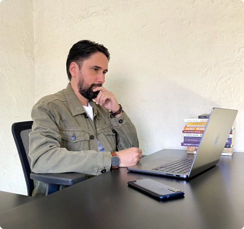
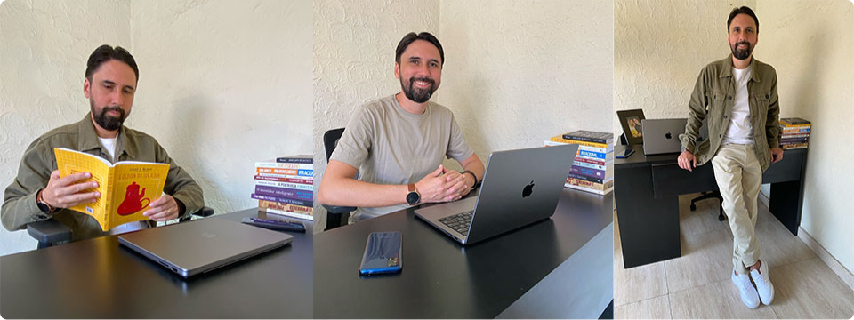
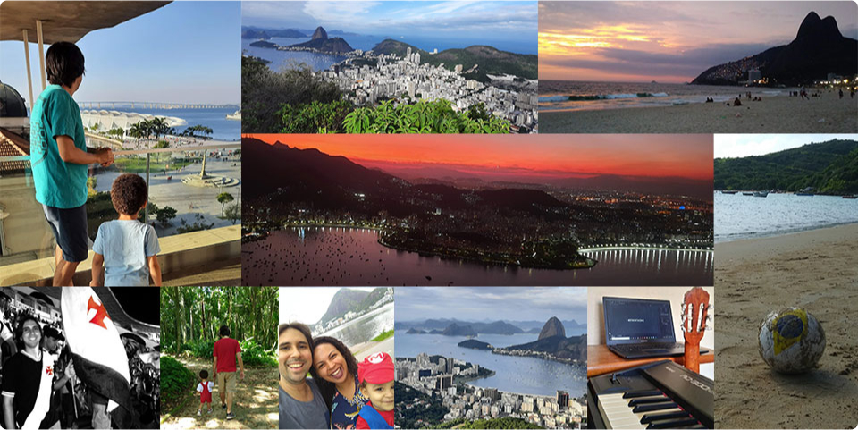

Sou Rodrigo Pessôa
product designer digital em um dos maiores grupos educacionais do Brasil.
Sou formado em Tecnologia da Informação, com MBA em Novos Negócios e Inovação. Iniciei minha carreira em 2007, atuando por 9 anos como web designer e 6 anos como front-end, em agências de design e propaganda.
Hoje, sou Product Designer na Ensineme uma edtech que pertence ao grupo YDUQS, focado em soluções digitais inovadoras e experiências centradas no usuário.

Product Designer na Ensineme
Agosto de 2022 até hoje
Promovo a educação à distância na plataforma de ensino da empresa, aplicando métodos de design como design thinking, pesquisas com usuários, testes de usabilidade, prototipação e design de acessibilidade.
Também contribuo com a documentação, o handoff de componentes e o aprimoramento do design system, sempre focado em agregar valor, manter o ambiente de trabalho organizado e melhorar continuamente a experiência do usuário.
Web Designer na YDUQS
Novembro de 2020 até agosto de 2022
A YDUQS é um dos maiores grupos de educação superior no Brasil. Grandes marcas fazem parte desse grupo: Estácio, IBMEC, Idomed, QConcursos entre outras.
Fiz parte de uma equipe multi-disciplinar colaborando para fazer um produto digital de alta qualidade. Desenvolvi páginas utilizado HTML e CSS, além de fazer o tratamento de imagens.
Front-End na MG Studio
Setembro de 2014 até outubro de 2020
A MG Studio produz elegantes sites com grande foco em estética e design para vários segmentos. Meu papel consistia em transformar layouts em templates responsivos para WordPress, aplicando conhecimentos em CSS e Javascript os modelos eram produzidos com bastante movimento e interação.
Com um olhar criterioso eu analisava se cada detalhe do website estava seguindo o padrão de design das marcas.
Web Designer na Brainter
Outubro de 2008 até agosto de 2014
Nesta empresa, eu trabalhei para clientes como Paramount Pictures, Amsterdam Sauer, Info Globo, Michelin, entre outros.
Colaborei na criação de layouts para websites, banners e newsletters, desenvolvi páginas em HTML responsivas.
Contribui para melhorar o design da interface do gerenciador de conteúdo desenvolvido pela equipe de programadores para uso exclusivos dos clientes desta empresa.
“Design é função, não forma.” - Steve Jobs
Como sou no trabalho
Um pouco introspectivo, mas geralmente eu me comunico bem. Gosto de apresentar trabalhos e também deixar tudo organizado.
Costumo fazer muitas perguntas para entender bem os problemas das pessoas, assim consigo pensar em soluções mais assertivas.
Escutando música e comendo chocolate eu trabalho muito melhor.

Como sou na vida
Tenho um filho e gosto de assistir desenhos, filmes de herói e documentários sobre o planeta Terra com ele. Também amamos desenhar juntos.
Adoro ouvir música e me arriscar tocando piano ou violão. Meus estilos musicais preferidos são, jazz e R&B.
